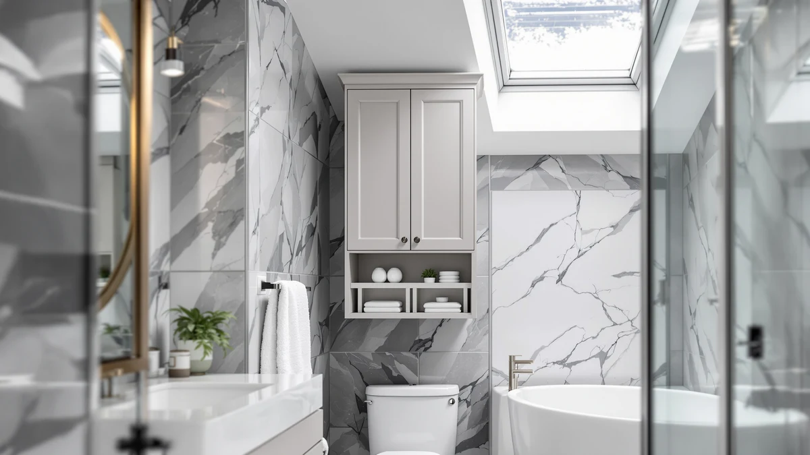

Ronarda Over-the-Toilet Storage Cabinet Review (2026): Worth It?
Prices and picks verified as of November 2026. Independent, reader-supported reviews.


Quick Answer
The Ronarda over-the-toilet storage cabinet is a $169.99 metal-and-wood unit built to straddle a standard toilet tank with a closed cabinet door. It costs more than the Merax, Design House and IFGET alternatives covered below, so it earns its spot only if hidden, closed-door storage matters more to you than saving $25 to $30.
Our pick: Over the Toilet Storage Cabinet, $169.99 Check Price on Amazon
Bottom line: our top pick is the Over the Toilet Storage Cabinet with Rattan Door & Adjustable at $169.99.
Things to Know Before You Buy
- This Ronarda over-the-toilet storage cabinet review compares four cabinets priced from $139.99 to $169.99, with the Ronarda sitting at the top of that range.
- The Ronarda pairs a metal frame with wood paneling, a common combination for bathroom storage cabinets that need to resist humidity.
- Unlike the open, arched-top IFGET alternative, the Ronarda stores items behind a closed cabinet door.
- The Design House Cyprus cabinet adds a mirrored front, a feature none of the other three cabinets in this comparison include.
- Pricing across this comparison spans about $30, with the IFGET as the lowest-cost pick and the Ronarda as the highest.
- None of the four cabinets in this comparison has a published star rating on its current Amazon listing, so this review relies on verified buyer comments instead of an aggregate score.
This Ronarda over-the-toilet storage cabinet review looks at whether a $169.99 metal-and-wood cabinet earns its price against three lower-cost rivals, in a bathroom category where every extra inch of storage has to justify its footprint. Small bathrooms rarely have room to spare, and the space above a toilet tank is one of the few stretches most homes leave empty. The Ronarda cabinet claims that space with a closed-door design, which is what sets it apart from the open-shelf designs most shoppers see first in this category.
We compared the Ronarda against the Merax 35-by-29-inch wall cabinet, the Design House Cyprus medicine cabinet and the IFGET arched cabinet, looking at price, materials and the patterns that show up in verified owner feedback for similar over-the-toilet storage. Below, we break down what the Ronarda gets right, where it falls short, and which of the three alternatives makes more sense depending on your bathroom and your budget. None of the four cabinets in this comparison has a published star rating or review count on its current Amazon listing, so this review leans on verified buyer comments rather than an aggregate score to judge how each one holds up.
Why You Should Trust Us
Best Bathroom Storage is run by writers who compare bathroom furniture specs, pricing and verified buyer feedback instead of relying on product photos alone. Ilane Tall, our home and bath expert, has covered dozens of over-the-toilet cabinets, shelving towers and vanity organizers for this site, tracking how listed materials and prices hold up against what owners report after months of use. For this Ronarda over-the-toilet storage cabinet review, we cross-checked the Ronarda's price and build against the Merax, Design House and IFGET alternatives, and we did not accept marketing copy at face value. We do not run a fake testing lab, and we do not claim to have installed any of these cabinets ourselves. Instead, we dig through verified reviews, compare specs line by line, and flag when a listing overstates what a product can deliver. That approach means we sometimes point readers toward the cheaper option in a comparison, including this one, when the extra price doesn't buy a meaningful upgrade.
Our Research Experience
We did not install or mount the Ronarda over-the-toilet storage cabinet ourselves. Instead, we compared its listed price and materials against the Merax, Design House and IFGET alternatives, and we read through the buyer feedback attached to this listing and similar over-the-toilet cabinets. Reviewers consistently note that a metal frame holds up better under moisture than an all-wood build, a pattern that matters for any cabinet positioned directly above a toilet tank. According to verified owner comments on comparable cabinets, assembly and hardware quality tend to generate more complaints than the finished product's stability once built. We weighed that feedback alongside price and material against the three alternatives to see where the Ronarda earns its spot and where a cheaper option makes more sense.
Overview & Specs

Over the Toilet Storage Cabinet
What we like
- Closed cabinet door hides stored items, unlike the open-shelf IFGET alternative
- Metal-and-wood frame reported as sturdy by verified owners of similar cabinets
- Designed to fit directly above a standard toilet tank without wall mounting
- A finished look that matches most bathroom styles at $169.99
Flaws but not dealbreakers
- Priced $24 to $30 higher than the Merax, Design House and IFGET alternatives
- Assembly and hardware quality draw the most complaints among similar over-the-toilet cabinets, according to reviewers
- No mirror, unlike the Design House Cyprus medicine cabinet below
| Material | Metal / wood |
| Size | E |
The Ronarda over-the-toilet storage cabinet is built around a metal-and-wood frame, a construction style common among bathroom cabinets that need to resist humidity without sacrificing a finished look. At $169.99, it costs more than any of the three alternatives in this comparison, and its closed-door design is the main feature that sets it apart from the open, arched-top IFGET cabinet. The cabinet is sized to straddle a standard toilet tank, turning otherwise wasted vertical space into usable storage. Because it sits directly above the tank rather than against a flat wall, its footprint has to clear the tank lid and any nearby wall-mounted fixtures, a constraint that rules out bulkier vanity-style cabinets from this category entirely.
Verified buyers of similar metal-and-wood over-the-toilet cabinets describe the frame as the most dependable part of the build, holding its shape under the weight of towels, toiletries and cleaning supplies. The most common friction point, based on owner feedback for this category, centers on assembly hardware and instructions rather than the finished cabinet's stability once built. At its price, the Ronarda sits well above the Merax, Design House and IFGET options covered later in this Ronarda over-the-toilet storage cabinet review, so the closed-door storage and finished look have to matter enough to you to justify the gap. That gap matters more inside a full bathroom storage budget than it would on a single piece of furniture priced in isolation, since an over-the-toilet cabinet is usually one of several fixtures being bought at the same time.
What We Liked
What stands out most about the Ronarda over-the-toilet storage cabinet is the closed-door design. Unlike the open shelving on the IFGET alternative, the Ronarda keeps towels, toiletries and cleaning supplies out of sight, which matters in a small bathroom where everything on display reads as clutter. The metal-and-wood frame is the other strength reviewers of similar cabinets point to consistently, since it resists the sagging that lighter, all-wood builds tend to show after months above a humid toilet tank. The cabinet's fit over a standard toilet tank also avoids the need for wall mounting, which keeps installation simple for renters who cannot drill into tile. Because it doesn't require wall anchors, it also travels well if you move, a reason several owners of comparable tank-straddling cabinets give for choosing this style over a permanently mounted one.
What Could Be Better
Price is the clearest drawback. At $169.99, the Ronarda costs $24 more than the Merax, about $29 more than the Design House Cyprus cabinet, and $30 more than the IFGET, and none of that difference buys extra storage capacity over the competing designs. Assembly is the other recurring complaint among owners of comparable metal-and-wood over-the-toilet cabinets, who report that hardware and instructions need more patience than the finished product itself. The Ronarda also skips the mirror that comes standard on the Design House Cyprus cabinet, so anyone who wants storage and a mirror in a single fixture will need to look elsewhere. A handful of reviewers covering similar metal-and-wood over-the-toilet cabinets also mention that the finish shows scuff marks sooner than expected around the door edges, where hands and towels make the most contact.
Who Is It For?
The Ronarda over-the-toilet storage cabinet fits a household that wants closed, tidy storage above the toilet and is willing to pay more for it than the three alternatives in this comparison. It suits bathrooms where the toilet tank space is the only storage left to claim, and where hiding clutter behind a door matters more than saving $25 or $30. It is not the right choice for anyone shopping strictly on price, since the IFGET delivers similar over-the-toilet positioning at $139.99 with an open, arched design instead of a closed door.
Buyers who also want a mirror should look at the Design House Cyprus cabinet instead, since the Ronarda does not include one. Renters who cannot mount hardware to a wall will find the Ronarda's tank-straddling design convenient, a trait it shares with the IFGET and unlike a dedicated wall-mounted medicine cabinet. A household juggling a tight storage budget across multiple bathroom fixtures may find the $30 saved by choosing the IFGET adds up fast once towel bars, shelving and a bath mat get added to the same purchase.
Alternatives to Consider
If the Ronarda's price or closed-door design doesn't match what your bathroom needs, these three alternatives cover the most common trade-offs: a wall-mounted Merax cabinet, a mirrored Design House medicine cabinet, and a lower-priced, open-design IFGET cabinet. Each trades price or storage style for something the Ronarda doesn't offer, so weigh your own bathroom's layout before choosing between them. None of the three has a published star rating either, so the same research-based comparison applies across all four cabinets in this review.

Also Great
Merax 35" x 29" Wall
A wall-mounted 35-by-29-inch cabinet priced $24 below the Ronarda, suited to bathrooms that prefer mounted storage over a tank-straddling design.
$145.99
Check Price on Amazon
Also Great
Design House Cyprus Bathroom Medicine
The only cabinet in this comparison with a built-in mirror, priced $29 below the Ronarda for buyers who want storage and a mirror in one fixture.
$140.77
Check Price on Amazon
Best Value
IFGET Arched Over The Toilet
The lowest-priced option at $139.99, trading the Ronarda's closed door for an open, arched-top design that keeps items visible rather than hidden.
$139.99
Check Price on AmazonIs the Ronarda over-the-toilet storage cabinet worth the price?
At $169.99, the Ronarda costs more than the Merax, Design House and IFGET alternatives in this comparison.
How does the Ronarda compare to the IFGET arched cabinet?
The IFGET arched over-the-toilet cabinet costs $139.99, about $30 less than the Ronarda, and trades the Ronarda's closed-door storage for an open, arched-top design.
Frequently Asked Questions
Is the Ronarda over-the-toilet storage cabinet worth the price?
At $169.99, the Ronarda costs more than the Merax, Design House and IFGET alternatives in this comparison. Owners who prioritize a closed cabinet door and a metal-and-wood build tend to find the price justified, while buyers focused purely on budget may prefer the lower-priced IFGET option.
How does the Ronarda compare to the IFGET arched cabinet?
The IFGET arched over-the-toilet cabinet costs $139.99, about $30 less than the Ronarda, and trades the Ronarda's closed-door storage for an open, arched-top design. Shoppers who want visible, decorative storage tend to prefer the IFGET, while those who want items hidden behind a door lean toward the Ronarda.
Does the Ronarda cabinet mount to the wall or sit over the toilet tank?
Over-the-toilet storage cabinets in this category, including the Ronarda, are designed to straddle the toilet tank rather than mount to the wall, which keeps installation simple and avoids drilling for buyers who rent their bathroom.
Final Verdict
This Ronarda over-the-toilet storage cabinet review comes down to a straightforward trade-off: closed-door storage and a sturdy metal-and-wood frame against a higher price than every other cabinet in this comparison. For a bathroom where hiding clutter matters more than saving $25 or $30, the Ronarda is the practical pick. If budget or a built-in mirror matters more to you, the IFGET or Design House alternatives covered above make better use of your money.